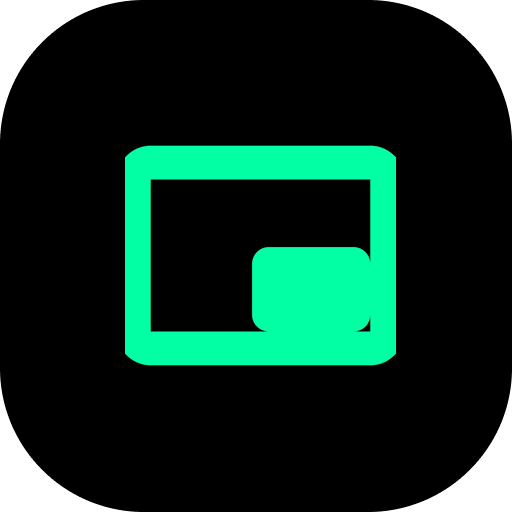

Chzzk-PIP
변경한 설정은 치지직을 새로고침해야 적용됩니다.
PIP
영상의 오른쪽 하단에 PIP 버튼을 추가합니다.
녹화
영상의 오른쪽 하단에 녹화 버튼을 추가합니다.
스크린샷
영상의 오른쪽 하단에 스크린샷 버튼을 추가합니다.
빠른 저장
녹화가 종료되면 webm 파일을 결과창 표시 없이 즉시 다운로드합니다.
방향키 탐색(베타)
시청 중 방향키를 이용해 5초씩 앞뒤로 이동할 수 있습니다. (불안정)
스크린샷 미리보기
스크린샷을 찍은 후 미리보기를 표시하고, 저장 여부를 선택할 수 있습니다.